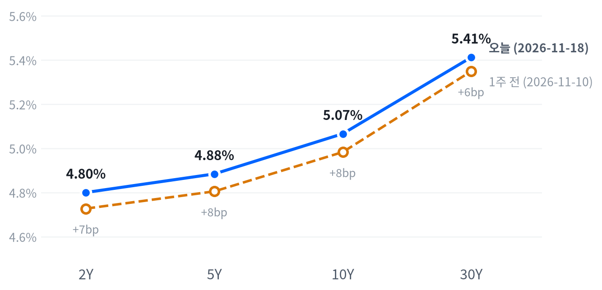

엔비디아는 기대를 넘은 실적에도 2.89% 내렸고 AMD와 브로드컴이 올라, 시장은 AI 칩 수요보다 엔비디아의 지배구조·공시 위험을 따로 할인했다. 관리의료주 급락까지 겹쳐 S&P 500은 0.23% 내려 5거래일 연속 하락했다.
월러 이사가 12월 50bp 인상을 거론했지만 2년물은 거의 움직이지 않았고 장기물 금리가 유가 하락과 함께 내려 커브가 평탄해졌다. 12월 25bp 인상은 이미 가격에 들어 있어, 단기채 금리를 더 밀어 올릴 재료는 50bp 확률의 변화뿐이다.
11월 18일 정규장은 엔비디아가 전날 장 마감 뒤 시간외에서 얻은 상승분을 모두 반납한 날이다. 시가 159.19달러에서 출발한 주가는 장 내내 밀려 150.96달러로 끝났다. 하비 존스 이사장이 실적 발표에서 젠슨 황의 CEO 복귀는 없다고 밝혔고, 크레스 임시 CEO는 황이 이끈 투자 프로그램의 지원 대상을 재검토하겠다고 했다. 엔비디아가 실적 당일 분기 보고서(10-Q)를 내지 않았고 증권거래위원회(SEC)가 공시를 들여다본다는 보도도 나왔다. 같은 날 AMD와 브로드컴은 올랐다.
우리는 이 반락을 시장이 AI 칩 수요를 의심한 결과가 아니라 엔비디아 한 회사의 지배구조·공시 위험을 할인한 결과로 본다. 수요를 의심했다면 경쟁 칩업체가 함께 내렸어야 하는데, 투자자들이 엔비디아의 문제를 엔비디아만의 문제로 본다는 보도와 함께 경쟁사로 돈이 옮겨 갔다. 시장 일각에서는 엔비디아의 네오클라우드 공급 약정이 한 분기 만에 360억 달러에서 320억 달러로 줄어든 것을 두고, 자금 여력과 최종 고객 존재 여부를 엄격히 따지겠다는 뜻이라는 의견도 있었다. 가장 강한 반론은 습관적인 차익 실현이다. 엔비디아는 지난 10번의 실적 가운데 9번 다음 날 시가 아래에서 끝났다는 집계가 있고, 11월 19일 앤스로픽 상장을 앞둔 자금 이동도 겹쳤다. 이 경우 지배구조 재료와 무관하게 며칠 안에 되돌림이 나온다. 엔비디아가 시장보다 얼마나 움직일지를 두고 시장이 가진 기대치는 구하지 못해, 이 할인이 어디까지 주가에 반영됐는지는 판단할 수 없다.
반도체·AI 하드웨어 업종 안에서 엔비디아와 다른 AI 칩·네트워크 업체의 주가가 처음으로 크게 갈렸다. 업종 바스켓을 시가총액 비중으로 짜면 엔비디아 한 종목의 지배구조 위험이 바스켓 전체의 성과를 좌우할 수 있다는 점을 따질 재료다. 엔비디아와 반도체 지수의 상대 비교 같은 표현은 근거가 하루뿐이라 지금은 새 아이디어로 내지 않고, 차입·옵션 비용 자료도 없다. 원화 현금과 단기채 쪽에서는 매파 발언에도 2년물 금리가 오르지 않았다는 점이 중요하다. 12월 25bp 인상이 이미 가격에 들어 있어, 단기채 금리가 더 오르려면 50bp 확률이 의미 있게 올라야 한다. 블룸버그를 인용해 BofA가 2년물 금리가 연말까지 5%에 이를 수 있고 12월 50bp 인상 가능성도 배제하기 어렵다는 전망을 내놓았다는 시각도 나왔다.
엔비디아 판단은 11월 17일 종가 대비 11월 24일 종가에서 엔비디아 누적 등락률이 S&P 500 누적 등락률보다 6.21%p 이상 높으면 뒷받침되고, 6.21%p 이상 낮으면 약해지며 지배구조·마진 할인을 우선 설명으로 본다. 그 사이면 결론을 내지 않는다. 방향이 맞아도 같은 기간 기술 업종 ETF(XLK)가 엔비디아만큼 이상 오르면 업종 전반의 반등으로 보고 원인은 판단하지 않는다. 11월 19~24일 엔비디아가 AMD·브로드컴과 함께 오르면 습관적 차익 실현 쪽 설명이, 계속 뒤처지면 고유 할인 쪽 설명이 힘을 얻는다. 커브 쪽에서는 11월 19일 신규 실업수당 청구와 10년 물가연동국채 입찰 뒤 2년물이 4.800%에서 10년물보다 더 오르면, 장기 금리가 금리차 확대를 이끈다는 판단이 약해진다.
출처: CNBC, TechCrunch, Seoul Economic Daily, Techi
| 지수 | 종가 | 등락 | 기준일 |
|---|---|---|---|
| 닛케이225 | 59,024.28 | +0.28% | 11월 18일 |
| 항셍 | 23,294.75 | -0.91% | 11월 18일 |
| 상해종합 | 3,587.83 | +0.09% | 11월 18일 |
| DAX | 25,736.24 | -1.19% | 11월 18일 |
| FTSE100 | 10,551.17 | -1.30% | 11월 18일 |
| 유로스톡스50 | 6,154.39 | -0.93% | 11월 18일 |
| VIX | 24.56 | -0.90p | 11월 18일 |
여섯 지수와 VIX는 모두 11월 18일 값이다. VIX 등락은 포인트다. (2026년 11월 19일 정정: 처음에는 아시아 세 지수와 DAX·유로스톡스50을 직전 세션인 11월 17일 종가로 실었다. 11월 18일 종가로 바로잡고 아래 지역 흐름 문단도 고쳤다.)
유럽은 전날 미국의 소프트웨어 매도를 이어받아 약하게 끝났다. 유럽 세 지수는 평균 1.14% 내렸고, FTSE100(-1.30%)과 DAX(-1.19%)의 낙폭이 컸다. 아시아 세 지수도 평균 0.18% 내렸지만 지역 안에서 갈려, 항셍이 0.91% 내리는 동안 닛케이225는 0.28% 올랐다. 미국은 그 약세를 다우와 S&P 500이 이었지만, 나스닥과 러셀2000은 소폭 올라 지수 사이에서 방향이 갈렸다.
밤사이 S&P 선물(ES)은 엔비디아 실적이 나온 직후인 전날 16:00(ET) 저점 7,352에서 18:00(ET) 고점 7,435까지 1.12% 범위로 올랐고, 나스닥 선물(NQ)은 같은 시각 사이 2.09% 범위로 더 크게 움직였다. 그 뒤 상승분 일부를 내줬지만 현물은 S&P 500 +0.21%, 나스닥 +0.52%로 높게 출발했고, 러셀2000만 전일 종가보다 낮게 열었다. 08:30(ET)에 10월 주택착공이 나왔다.
세 지수 모두 하루 범위의 중간쯤에서 끝났다. 장 초반 매도로 생긴 저점에서는 벗어났지만 고점권까지 되찾지는 못한 마감이다.
개별 기업 재료가 지수를 움직이고, 연준의 매파 신호는 주식보다 금과 달러에 더 크게 드러난 날이다. 엔비디아와 관리의료주가 지수를 끌어내렸고 아마존·AMD·브로드컴·사이버보안주가 받쳤다. 월러 이사의 12월 50bp 인상 언급과 14:00(ET)에 공개된 10월 FOMC 의사록은 매파적이었지만 국채 장기물 금리는 유가와 함께 내렸다. 금은 3.17% 급락했고 달러는 강해졌다. VIX는 0.90p 내린 24.56이지만 최근 2년(504거래일) 가운데 이보다 높았던 날이 46일뿐인 높은 수준이다. 정규장 뒤에는 팔로알토가 기대를 넘은 실적을 내 시간외에서 올랐고, 앤스로픽은 희망 범위 70~78달러를 넘는 83달러에 공모가를 정해 11월 19일 나스닥에서 거래를 시작한다.
출처: CNBC, TechCrunch
| 지수 | 종가 | 등락률 |
|---|---|---|
| 러셀2000 | 2,714.31 | +0.46% |
| 나스닥 | 24,429.88 | +0.42% |
| S&P500 성장주 | 128.00 | +0.02% |
| S&P500 | 7,323.63 | -0.23% |
| S&P500 가치주 | 235.25 | -0.60% |
| 다우존스 | 50,198.17 | -1.11% |
| 섹터 | 등락률 |
|---|---|
| 경기소비재 | +1.79% |
| 기술 | +0.34% |
| 커뮤니케이션서비스 | +0.30% |
| 유틸리티 | +0.30% |
| 부동산 | +0.07% |
| 산업재 | -0.05% |
| 필수소비재 | -0.31% |
| 소재 | -0.75% |
| 금융 | -1.14% |
| 헬스케어 | -2.20% |
| 에너지 | -3.27% |
지수 숫자는 작았지만 속은 크게 갈렸다. S&P 500은 0.23% 내린 7,323.63으로 5거래일 연속 내렸고, 움직임은 평소 하루 폭의 4분의 1에도 못 미쳤다. 나스닥은 0.42% 오른 24,429.88, 러셀2000은 0.46% 오른 2,714.31로 끝났다. 다우는 1.11% 내린 50,198.17로 낙폭이 가장 컸는데, 가격가중 지수라 10.21% 급락한 유나이티드헬스의 몫이 컸다.
S&P 500은 개장 직후가 사실상 그날의 고점이었다. 월러 이사의 인터뷰가 나온 오전 장에 7,286까지 시가보다 0.95% 밀렸다가 오후에 낙폭 일부를 되찾았다. 시점이 겹친다는 것 말고는 그 저점의 원인을 가를 근거는 없다. 엔비디아는 반등 없이 밀렸다. 시가 159.19달러에서 장 후반 150.40달러까지 5.52% 내린 뒤 그 부근에서 끝나, 시간외 상승을 정규장에서 지켜 줄 매수가 나오지 않았다.
지수를 받친 것은 경기소비재, 끌어내린 것은 헬스케어와 금융이다. 추정 기여도로 경기소비재 +0.25%p, 기술 +0.11%p, 커뮤니케이션서비스 +0.04%p, 유틸리티 +0.01%p가 지수를 받쳤고, 헬스케어 -0.20%p, 금융 -0.12%p, 에너지 -0.09%p, 필수소비재 -0.01%p가 끌어내렸다. 산업재는 0.00%p이고, 업종 합으로 설명되지 않는 부분은 -0.22%p다. 경기소비재의 몫은 대부분 3.82% 오른 아마존에서 왔다. 기술 업종은 엔비디아가 내리고 AMD·브로드컴·사이버보안주가 올라 안에서 상쇄된 채 0.34% 오르는 데 그쳤다. 에너지(-3.27%)가 가장 크게 내렸지만 덩치가 작아 지수에 준 몫은 헬스케어의 절반에 못 미쳤다.
추정 기여도는 업종 비중을 직접 받지 않아, 최근 252거래일 지수·업종 수익률로 추정한 비중을 곱한 값이다. 소재와 부동산은 비중을 추정할 수 없어 빠졌다.
지수의 하락은 시장 전반의 매도가 아니라 업종 사이의 자리바꿈이다. 가치주가 0.60% 내리는 동안 성장주는 0.02% 올라 보합이었고, 소형주는 오히려 올랐다. 지수를 끌어내린 재료는 엔비디아의 지배구조 문제와 관리의료의 규제 제안처럼 개별 기업에 묶인 것들이라, 이날 하락만으로 5거래일 연속 하락의 성격이 바뀌었다고 보기는 어렵다.
출처: Investing.com, StockTitan
| 만기 | 종가 | 전일比(bp) | 1주 전 | 주간 변화(bp) |
|---|---|---|---|---|
| 2Y | 4.800% | -0.6 | 4.727% | +7.3 |
| 5Y | 4.884% | -3.1 | 4.805% | +7.9 |
| 10Y | 5.066% | -4.3 | 4.983% | +8.3 |
| 30Y | 5.412% | -4.8 | 5.349% | +6.3 |
월러 이사와 10월 FOMC 의사록이 매파 신호를 냈지만 국채는 장기물 중심으로 사들여졌다. 2년물은 0.6bp 내린 4.800%로 거의 움직이지 않았고, 5년물은 3.1bp 내린 4.884%, 10년물은 4.3bp 내린 5.066%, 30년물은 4.8bp 내린 5.412%로 끝났다. 장기물 레벨은 여전히 높다. 10년물은 최근 2년(504거래일) 가운데 이보다 높았던 날이 25일뿐이고, 30년물은 24일뿐이다.

커브 차트의 「오늘」은 11월 18일 종가, 「1주 전」은 11월 10일 종가다. 1주 전보다 2년물은 7.3bp, 10년물은 8.3bp, 30년물은 6.3bp 높다.
하루로는 10년물이 2년물보다 3.7bp 더 내린 불 플래트닝이다. 2s10s는 26.6bp(전일 30.3bp), 5s30s는 52.8bp다. 1주 전과 비교하면 전 만기가 7~8bp 안팎 함께 오른 베어 이동이 큰 모양이고, 그 안에서 30년물이 덜 올라 장기 구간은 평탄해졌다. 이날은 그 상승분의 일부를 장기물부터 되돌렸다.
앞단이 버틴 이유는 12월 인상이 이미 가격에 들어 있어서라고 본다. 월러 이사는 12월 8~9일 회의에서 0.5%p 인상이 아마 필요하다고 말했고, 의사록은 거의 모든 참석자가 추가 인상이 적절할 것으로 봤으며 몇몇은 물가 지표가 나쁘면 25bp를 넘는 인상도 검토할 수 있다고 적었다. 그런데 CME FedWatch 기준 12월 25bp 인상 확률이 92.7%, 50bp가 7.3%(전일 96.9%·3.1%)로 보도돼, 새로 가격에 들어간 것은 50bp 꼬리 확률 몇 %p뿐이었다. 2년물이 장중 4.83%까지 올랐다가 되밀렸다는 보도도 있다. 장기물은 유가 하락에 눌렸다는 보도가 많았고, 20년물 입찰 수요가 약했는데도 장기물이 강했다는 점은 이날 장기 금리를 움직인 것이 수급보다 유가와 성장 기대 쪽이라는 해석에 무게를 싣는다. 장중 금리 자료가 없어 두 재료의 몫을 종가로는 나누지 못한다.
실질금리와 기대인플레로 나눈 최신 자료는 11월 17일 것이다. 그날 10년물 2bp 하락은 실질금리 -3bp, 기대인플레 +1bp로 나뉘었고, 5거래일로 넓히면 22bp 상승 가운데 23bp가 실질금리였다. 11월 18일 값은 기대인플레만 들어와 10년 기대인플레가 2bp 내린 2.19%다. 유가가 급락한 날 기대인플레가 내린 것은 장기 금리 하락이 유가 쪽에서 왔다는 보도와 같은 방향이지만, 명목금리가 4.3bp 내린 가운데 실질금리의 몫은 11월 18일 실질금리 값이 나와야 확인된다. 기대인플레에는 위험·유동성 프리미엄도 섞여 있다. 하이일드 스프레드는 11월 17일 3.43%로 하루 사이 9bp 넓어졌다.
5년 뒤 5년 명목금리 5.30%, 실질 3.14%(11월 17일 기준). 기대인플레 쪽 수치와의 교차검증은 할 수 없었고, 위험 프리미엄이 섞인 값이다.
출처: CNBC, Seoul Economic Daily, investingLive, Newsquawk
| 입찰 | 규모 | 낙찰 | 응찰배율 | 간접 | 직접 | 딜러 | 판정 |
|---|---|---|---|---|---|---|---|
| 20년물 | 160억 달러 | 5.459% | 2.63배 (2.63배) | 60.2% (63.7%) | 26.7% (24.3%) | 13.1% (12.0%) | 수요 약함 |
재무부는 11월 18일 20년물 160억 달러를 낙찰금리 5.459%에 팔았다. 규모는 직전 같은 만기 입찰(10월 21일)의 130억 달러보다 늘었다. 응찰배율은 2.63배로 직전 6회 평균 2.63배와 같았고, 딜러 비중은 13.1%로 평균보다 1.1%p 높았다. 해외 중앙은행·기관 수요의 대용인 간접 낙찰 비중은 60.2%로 평균보다 3.5%p 낮았다. 응찰배율은 평균과 같았지만 간접 비중이 줄어든 몫을 딜러가 더 떠안았고 규모까지 늘어난 입찰이라 수요 약함으로 본다.
| 통화쌍 | 종가 | 등락률 | 기준일 |
|---|---|---|---|
| DXY | 103.780 | +0.26% | 11월 18일 |
| USD/KRW | 1,332.40 | -0.17% | 11월 18일 |
| USD/JPY | 159.302 | -0.02% | 11월 18일 |
| EUR/USD | 1.0979 | -0.27% | 11월 18일 |
달러는 유로 대비 강해졌다. 달러지수는 0.26% 오른 103.780으로 평소 하루 움직임과 비슷한 크기였고, 최근 2년(504거래일) 가운데 높은 쪽 18% 안에 있다. 유로/달러는 0.27% 내린 1.0979다. 달러/엔은 0.02% 내린 159.302엔으로 거의 움직이지 않았고, 원/달러는 0.17% 내린 1,332.40원으로 최근 2년 가운데 이보다 낮았던 날이 8일뿐인 레벨에 머물렀다.
달러 강세를 정책금리 기대로 설명하는 보도가 있지만, 종가로는 그 경로가 확인되지 않는다. ING는 강한 미국 지표와 목표를 넘는 물가가 추가 인상 기대를 되살려 달러를 받쳤다고 봤고, 월러 이사의 50bp 언급과 매파적 의사록이 같은 날 나왔다. 그러나 미국 2년물은 0.6bp 내려 금리 쪽은 달러를 밀어 올리지 않았고, 상대국 금리를 함께 재지 않아 금리차가 실제로 벌어졌는지도 알 수 없다. 달러가 유로에만 강하고 엔·원에는 거의 움직이지 않은 점은 유로 쪽 재료의 몫이 있었을 여지를 남기지만, 유로 고유의 재료는 확인하지 못했다. 정책금리 기대가 달러를 움직였다면 11월 19일 신규 실업수당 청구 뒤 2년물과 달러가 같은 방향으로 움직여야 한다.
환율은 뉴욕 16:00 ET 가격, 전 거래일 같은 시각 대비다. 결제가와 다를 수 있다.
출처: ING
| 품목 | 종가 | 등락률 |
|---|---|---|
| WTI | $81.88 | -2.97% |
| Brent | $88.76 | -1.54% |
| 천연가스 | $3.408 | +6.80% |
| 금 | $3,728.00 | -3.17% |
금이 하루 만에 3.17% 내려 3,728.00달러로 끝났다. 평소 하루 움직임의 2.4배로, 이날 움직인 자산 가운데 가장 컸다. 유가도 함께 밀렸다. WTI는 2.97% 내린 81.88달러, 브렌트는 1.54% 내린 88.76달러다. 천연가스만 6.80% 오른 3.408달러로 반대로 갔다.
금의 급락은 국채 금리가 내린 날 나왔다는 점에서 보유비용으로는 설명되지 않는다. 금은 아시아 시간 3,799.8달러 고점에서 출발해 미국 장 후반 3,721.8달러 저점까지 하루 내내 밀렸고, 저점 부근에서 끝났다. 시간상으로는 월러 이사의 12월 50bp 언급, 매파적 의사록, 달러지수 0.26% 상승과 겹친다. 정책금리 기대가 높아지고 달러가 강해진 것이 금을 눌렀다는 설명이 가장 가깝지만, 그날 금 급락의 원인을 직접 다룬 보도는 찾지 못했다. 10년 실질금리는 11월 17일까지 5거래일 사이 23bp 올라 금을 들고 있는 부담은 이미 커져 있었고, 11월 18일 실질금리가 오르지 않았다면 이날 하락은 금리보다 달러나 포지션 정리 쪽에서 왔을 여지가 크다.
유가 하락은 아시아 시간에 나온 미국 원유 재고 증가 보도와 강달러 속 원자재 약세가 겹친 결과로 본다. WTI는 아시아·유럽 시간 84.63달러 고점에서 미국 장 중반 81.20달러까지 밀렸다. 국제에너지기구(IEA) 비롤 사무총장은 호르무즈 해협이 전쟁 전으로 돌아갈 믿을 만한 경로가 없다고 썼지만 유가는 반응하지 않았다. 브렌트와 WTI의 가격 차는 6.88달러로 전 거래일 5.76달러보다 벌어져, 이날 매도는 미국 원유에 더 몰렸다. 표의 WTI는 1월물, 브렌트는 2월물이라 가격 차에는 만기 차이도 들어 있다. 천연가스 급등의 원인은 확인하지 못했다.
원자재·환율은 뉴욕 16:00 ET 가격, 전 거래일 같은 시각 대비다. 결제가와 다를 수 있다. 금의 하루 움직임은 최근 60거래일 평균 하루 변동 대비 2.42배다.
출처: HDFC Sky, ING, CNBC
아마존(+3.82%)은 경기소비재 업종의 상승을 거의 혼자 만든 종목이다. 앤스로픽 공모가 확정을 앞두고 아마존이 보유한 약 14.7% 지분의 가치에 주목한 매수라는 보도가 나왔고, 장중 2%대이던 상승폭이 마감까지 커졌다.
엔비디아(-2.89%)는 반도체·AI 하드웨어 관련주의 약세를 키운 종목이다. 이사회의 황 복귀 거부, 투자 프로그램 재검토 발언, 분기 보고서 지연과 SEC 조사 보도가 겹치며 기대를 넘은 실적에도 시간외 상승을 정규장에서 모두 내줬다. 코어위브 같은 네오클라우드 업체도 함께 내렸다는 보도가 나왔다.
브로드컴(+3.64%)과 AMD(+5.31%)는 같은 반도체 업종 안에서 엔비디아와 반대로 갔다. 투자자들이 엔비디아의 경영 불확실성을 엔비디아만의 문제로 보고 경쟁 칩업체로 옮겨 갔다는 보도가 나왔다. 두 회사는 앤스로픽 공모와 함께 진행되는 사모 투자에도 참여자로 거론됐지만, 그것이 이날 주가의 원인이라는 보도는 확인하지 못했다.
유나이티드헬스(-10.21%)와 휴매나(-12.98%)는 헬스케어 업종의 약세를 키웠다. 메디케어·메디케이드 서비스센터(CMS)가 메디케어 어드밴티지의 위험조정 데이터 검증 감사를 재개하고 그 결과를 2018 지급연도까지 거슬러 적용하는 규정을 제안했고, CMS는 지급연도마다 약 90억 달러를 환수할 것으로 추정했다는 보도가 나왔다. 제안 단계라 최종안에서 바뀔 수 있고, 오펜하이머는 이전 틀이 법원에서 무효화됐듯 소송이 이어질 것으로 봤다. 방어 스타일 안에서도 관리의료는 정책 위험이 주가를 정하는 구간에 들어섰다.
팔로알토(+9.9%)와 크라우드스트라이크(+7.95%)는 소프트웨어 업종 안에서 사이버보안의 강세를 이끌었다. 팔로알토의 장 마감 뒤 실적을 앞두고 포티넷·클라우드플레어까지 업종 전체가 올랐고, AI를 이용한 사이버 공격이 늘고 있다는 정부 경고와 연결한 보도가 나왔다. 팔로알토는 장 마감 뒤 기대를 넘은 실적과 연간 가이던스 상향을 내 시간외에서 7% 올랐지만, 그것은 정규장 상승의 원인이 아니다. 전날 AI가 소프트웨어 수요를 줄인다는 우려로 급락한 업종 안에서, AI 위협이 수요를 늘리는 보안 업체가 따로 움직이기 시작했다.
출처: Traders Union, TechCrunch, Investing.com, CNBC, Seoul Economic Daily, Yahoo Finance, Quantisnow
10월 주택착공이 새로 나왔지만 미국 경기 국면은 성장 보합·물가 재가속인 비용압박을 7일째 유지한다. 성장 점수는 0.225로 보합 범위 안이고, 가용 지표 기준의 물가 점수 0.647은 그대로 재가속을 가리킨다. 점수가 현재 국면을 가리켜 국면이 옮겨 갈 곳이 없고, 국면을 다시 열 자료는 11월 25일 PCE 물가와 GDP다.
고용축은 개선이고 새 발표는 없다. 비농업 고용의 3개월 평균이 +28K에서 +137K로 올라선 것이 판정을 받친다. 고용축 +0.564
| 지표 | Actual | Forecast | Previous | 발표일 | 컨센 대비 | 직전 대비 | 추세 |
|---|---|---|---|---|---|---|---|
| 구인건수(9월) | 7,523K | — | 7,190K | 2026-09 기준월 | 개선 | 보합 · 3개월 평균 7,435K → 7,349K | |
| 신규 실업수당 청구 | 200,000 | — | 191,000 | 2026-11-12 (11월 7일 주간) | 악화 | 개선(미미) · 4주 평균 199K → 195K | |
| 신규 청구 4주 평균 | 195,250 | — | 195,250 | 2026-11-12 (11월 7일 주간) | 보합 | 개선(미미) · 4주 평균 200K → 196K | |
| 계속 실업수당 청구 | 1,697,000 | — | 1,717,000 | 2026-11-12 (10월 31일 주간) | 개선 | 보합 · 4주 평균 1,707K → 1,708K | |
| 비농업 고용 변화(10월) | +165K | — | +60K | 2026-11-06 | 개선 | 개선(뚜렷) · 3개월 평균 +28K → +137K | |
| 실업률(10월) | 4.1% | — | 4.2% | 2026-11-06 | 개선 | 개선(미미) · 3개월 평균 4.20% → 4.13% | |
| 평균시간당임금 MoM(10월) | +0.37% | — | +0.26% | 2026-11-06 | 개선 | 개선(뚜렷) · 3개월 평균 +0.20% → +0.32% |
생산·활동축은 악화이고, 아홉 중 여섯이 악화, 하나는 보합, 둘은 반대다. 이날 나온 10월 주택착공은 1,309K로 9월보다 늘었지만 3개월 평균이 1,330K에서 1,260K로 내려 추세 판정은 악화(완만)에 머물렀다. 기존주택 판매의 뚜렷한 감소와 무역수지 적자 확대가 판정을 받친다. 생산·활동축 -0.652
| 지표 | Actual | Forecast | Previous | 발표일 | 컨센 대비 | 직전 대비 | 추세 |
|---|---|---|---|---|---|---|---|
| 주택착공(10월) | 1,309K | 1,250K | 1,191K | 2026-11-18 | 상회▲ | 개선 | 악화(완만) · 3개월 평균 1,330K → 1,260K |
| 산업생산 MoM(10월) | -0.43% | — | +0.73% | 2026-11-17 | 악화 | 악화(미미) · 3개월 평균 +0.19% → +0.07% | |
| 내구재주문 MoM(9월) | +1.91% | — | +0.14% | 2026-09 기준월 | 개선 | 악화(미미) · 3개월 평균 +1.70% → +0.98% | |
| 공장주문 MoM(9월) | +1.84% | — | +0.33% | 2026-09 기준월 | 개선 | 악화(미미) · 3개월 평균 +1.35% → +0.98% | |
| 건설지출 MoM(9월) | -1.85% | — | +1.98% | 2026-09 기준월 | 악화 | 개선(미미) · 3개월 평균 -0.18% → -0.01% | |
| 신규주택판매(9월) | 676K | — | 680K | 2026-09 기준월 | 악화 | 개선(미미) · 3개월 평균 652K → 668K | |
| 기존주택판매(10월) | 375만 | — | 397만 | 2026-11-12 | 악화 | 악화(뚜렷) · 3개월 평균 4,127K → 3,883K | |
| 무역수지(9월) | -$105.05B | — | -$105.74B | 2026-09 기준월 | 개선 | 악화(뚜렷) · 3개월 평균 -66.6 → -101.2 | |
| 실질GDP QoQ 연율(3분기) | +3.4% | — | +2.2% | 2026년 3분기 | 개선 | — | |
| 필라델피아 연은 제조업지수(10월) | 20.9 | — | 37.8 | 2026-10 기준월 | 악화 | 개선(뚜렷) · 3개월 평균 17.1 → 35.4 |
Census에 따르면 10월 주택착공은 연율 1,309K로 수정된 9월 1,191K보다 9.9% 늘어 예상 1,250K를 넘었다. Census는 이 증가의 90% 신뢰구간(±16.8%)이 0을 포함해, 실제 변화가 0과 다르다고 볼 통계적 근거가 부족하다고 밝혔다. 9월 착공은 처음 발표된 1,221K에서 1,191K로 낮춰졌다는 보도가 있다.
증가분은 대부분 다세대 주택에서 나왔다. 단독주택 착공은 864,000채였다. 9월(831,000채)보다 4.0% 늘었지만 이 증가도 신뢰구간(±9.0%) 안이다. 5세대 이상 건물의 착공은 433,000채였고, 헤드라인 증가분의 대부분이 이쪽에서 나왔다. 선행 지표인 건축허가는 1,295,000채로 수정된 9월 1,398,000채보다 7.4% 줄었고, 단독주택 허가는 772,000채로 9월보다 8.7% 줄었다. 완공은 1,272,000채였다.
헤드라인 상회는 표본 오차가 큰 다세대 반등이 만든 것이라 오래가리라 보기 어렵고, 앞으로 착공될 물량을 보여 주는 허가는 반대로 줄었다. 높은 모기지 금리가 주택 투자를 누르고 있다는 쪽의 근거로, 금리 인상의 실물 전달이 주택에서 먼저 나타난다는 해석을 받친다. 연준의 12월 인상 경로를 바꿀 재료는 아니고, 생산·활동축의 악화 판정과 비용압박 국면 판단도 그대로다. 다만 비용압박 국면 판단에 사용된 물가 신호는 8개 중 6개 지표를 기준으로 산출됐으므로, 해당 판단에는 결측에 따른 불확실성이 남아 있다. (2026년 11월 19일 덧붙임)
소비축은 개선이고 새 발표는 없다. 소매판매의 3개월 평균이 +0.28%에서 +0.83%로 오른 것이 판정을 받친다. 소비축 +0.764
| 지표 | Actual | Forecast | Previous | 발표일 | 컨센 대비 | 직전 대비 | 추세 |
|---|---|---|---|---|---|---|---|
| 소매판매 MoM(10월) | +0.21% | — | +0.83% | 2026-11-17 | 악화 | 개선(완만) · 3개월 평균 +0.28% → +0.83% | |
| 미시간대 소비자심리(9월) | 48.1 | — | 51.7 | 2026-09 기준월 | 악화 | 개선(완만) · 3개월 평균 48.0 → 51.7 |
물가축은 재가속이고 새 발표는 없다. 물가 축은 8개 지표 중 6개로 산출했다. 2025년 10월 CPI 비교 기준값이 공식적으로 제공되지 않아 2026년 10월 전년 동월 대비 지표 2개를 계산에서 제외했다. 재가속은 가용 지표 기준의 신호이며, 결측에 따라 물가 판단이 달라질 수 있다. 소비자물가 전월비의 3개월 평균이 +0.04%에서 +0.46%로 오른 것이 판정을 받친다. 물가축 +0.647
| 지표 | Actual | Forecast | Previous | 발표일 | 컨센 대비 | 직전 대비 | 추세 |
|---|---|---|---|---|---|---|---|
| PPI 최종수요 MoM(10월) | +0.35% | — | +1.41% | 2026-11-13 | 하락 | 재가속(뚜렷) · 3개월 평균 +0.17% → +0.72% | |
| CPI MoM(10월) | +0.35% | — | +0.65% | 2026-11-10 | 하락 | 재가속(뚜렷) · 3개월 평균 +0.04% → +0.46% | |
| Core CPI MoM(10월) | +0.30% | — | +0.33% | 2026-11-10 | 하락 | 재가속(뚜렷) · 3개월 평균 +0.14% → +0.31% | |
| PCE 물가 YoY(9월) | 3.65% | — | 3.44% | 2026-09 기준월 | 상승 | 교착 · 3개월 평균 3.62% → 3.49% | |
| Core PCE YoY(9월) | 3.12% | — | 3.03% | 2026-09 기준월 | 상승 | 교착 · 3개월 평균 3.10% → 3.05% | |
| 미시간대 1년 기대인플레(9월) | 4.6% | — | 4.0% | 2026-09 기준월 | 상승 | 둔화(완만) · 3개월 평균 4.70% → 4.27% |
직전 대비는 Actual을 Previous와 비교한 것이고, 추세는 최근 3개월 평균을 그 앞 3개월 평균과 비교한 것입니다(주간 실업수당 청구는 4주 평균끼리). 추세의 세기는 그 지표가 평소 움직이는 폭에 견준 크기이고, 작은 변화는 보합으로 봅니다. 분기 지표인 GDP는 두 비교가 같은 숫자를 보므로 직전 대비만 싣습니다.
연준의 다음 수는 12월 9일 FOMC의 25bp 인상이라는 판단을 유지하고, 시점도 그대로다. CME FedWatch 기준 12월 25bp 인상 확률은 92.7%, 50bp 인상 확률은 7.3%로 전날 96.9%·3.1%에서 50bp 쪽으로 조금 옮겨 갔다고 보도됐다. 월러 이사는 12월 0.5%p 인상이 아마 필요하다며 대안으로 25bp 인상과 1월 추가 인상의 분명한 신호를 제시했고, 10월 의사록은 거의 모든 참석자가 추가 인상을 적절하다고 봤다. 윌리엄스 뉴욕 연은 총재는 극적인 조치는 필요 없다고 해, 50bp는 아직 소수의 조건부 견해다.
12월 인상 중심 판단을 바꿀 조건은 그대로다. 다음 물가 확인은 11월 25일 PCE 물가이고, 가용 지표 기준의 물가 재가속 신호가 그 발표로 이어지는지가 50bp 논의의 무게를 정한다.
12월 9일 FOMC 전까지 연준 성명이나 의장 발언이 추가 인상 여지를 닫으면 12월 인상 중심 판단을 철회한다. 11월 25일 10월 PCE 물가가 예상을 밑돌고 CME FedWatch 12월 인상 확률이 소비자물가 발표 전 보도치(84%) 아래로 내려가면 12월 인상 중심 판단을 수정한다.
자산별 방향과 그 근거는 전일과 같다. 다만 전일의 채권·환율 판단에 포함된 물가 재가속 신호는 일부 지표가 결측된 상태에서 산출됐으며, 해당 판단의 불확실성도 함께 유지된다. (2026년 11월 19일 덧붙임)
주택착공 헤드라인은 예상을 넘었지만 허가는 줄었다. 주식 현물은 발표 뒤 높게 출발했지만 그 상승은 밤사이 엔비디아 실적 뒤 선물 흐름을 이은 것이고, 국채 금리는 종가 기준으로 월러 발언·의사록과 유가에 따라 움직였다. 발표 직후 금리 반응을 따로 떼어 볼 장중 자료가 없어, 컨센서스와의 차이에 시장이 즉각 얼마나 반응했는지는 잴 수 없다.
출처: CNBC, Seoul Economic Daily, GV Wire, Reuters
| 지수 | 순위(5거래일 전) | 1개월 | 3개월 | SPY 대비 3개월 | 대비 변화 | 12-1 모멘텀 | 변동성 | 1일 VaR 95% | 베타 | 50/200일선 | 52주 고점 대비 |
|---|---|---|---|---|---|---|---|---|---|---|---|
| 경기소비재 XLY | 4(6) | +3.2% | +2.4% | +6.4%p | +1.9%p | +1.8% | 20.3% | 1.7% | 0.96 | 위/위 | -3.7% |
| 금융 XLF | 7(7) | +1.3% | -0.6% | +3.4%p | +0.4%p | +10.0% | 16.8% | 1.6% | 0.63 | 위/위 | -4.7% |
| 에너지 XLE | 9(4) | -9.8% | -3.3% | +0.7%p | -5.8%p | +54.8% | 25.4% | 3.0% | 0.01 | 아래/위 | -12.5% |
| 주택건설 XHB | 10(13) | +4.7% | -4.1% | -0.1%p | +3.2%p | -3.1% | 29.2% | 2.5% | 0.84 | 위/아래 | -16.1% |
| 초대형주 Top 50 XLG | 11(10) | -7.0% | -4.5% | -0.5%p | +0.1%p | +9.7% | 18.4% | 2.0% | 1.16 | 아래/아래 | -9.3% |
| 소프트웨어 IGV | 12(12) | -9.3% | -4.9% | -0.9%p | +0.9%p | +1.4% | 34.7% | 3.5% | 1.36 | 아래/위 | -14.0% |
| 은행 KBE | 13(14) | +0.1% | -5.6% | -1.6%p | +2.5%p | +19.4% | 17.2% | 1.6% | 0.48 | 아래/아래 | -9.6% |
| 산업재 XLI | 16(19) | -1.3% | -8.2% | -4.2%p | +1.5%p | +12.1% | 18.3% | 1.6% | 0.86 | 아래/아래 | -11.5% |
| 소형주 IWM | 17(16) | -2.0% | -9.0% | -5.0%p | -0.6%p | +19.7% | 18.3% | 1.7% | 1.00 | 아래/아래 | -11.2% |
| 소형 성장 IWO | 18(20) | -2.3% | -10.9% | -6.9%p | -0.5%p | +14.2% | 23.0% | 2.2% | 1.26 | 아래/아래 | -13.8% |
| 방산 ITA | 19(21) | +1.0% | -12.3% | -8.3%p | +1.6%p | +1.4% | 21.9% | 2.1% | 0.77 | 아래/아래 | -17.7% |
| 전력망 GRID | 22(23) | -7.6% | -14.2% | -10.2%p | +1.2%p | +12.5% | 29.8% | 3.5% | 1.39 | 아래/아래 | -21.9% |
| 모멘텀 팩터 MTUM | 23(22) | -11.8% | -14.3% | -10.3%p | -0.2%p | +22.4% | 32.7% | 3.4% | 1.70 | 아래/아래 | -24.3% |
| 반도체·AI 하드웨어 SMH | 24(24) | -15.9% | -18.3% | -14.3%p | -2.5%p | +61.0% | 47.3% | 5.2% | 2.38 | 아래/아래 | -31.3% |
| 금속·광업 XME | 25(25) | -12.9% | -23.8% | -19.8%p | -6.2%p | +11.7% | 34.7% | 3.8% | 1.53 | 아래/아래 | -34.1% |
| 지수 | 순위(5거래일 전) | 1개월 | 3개월 | SPY 대비 3개월 | 대비 변화 | 12-1 모멘텀 | 변동성 | 1일 VaR 95% | 베타 | 50/200일선 | 52주 고점 대비 |
|---|---|---|---|---|---|---|---|---|---|---|---|
| 필수소비재 XLP | 1(2) | +3.9% | +7.6% | +11.6%p | +2.5%p | +17.4% | 17.6% | 1.4% | 0.01 | 위/위 | -1.5% |
| 헬스케어 XLV | 2(1) | +0.8% | +5.5% | +9.5%p | -5.2%p | +20.5% | 18.2% | 1.4% | 0.44 | 위/위 | -4.5% |
| 저변동성 SPLV | 3(5) | +3.6% | +2.7% | +6.7%p | +1.4%p | +6.1% | 12.3% | 1.0% | 0.20 | 위/위 | -1.6% |
| 배당 SCHD | 5(3) | 0.0% | +0.4% | +4.4%p | -3.1%p | +33.0% | 13.6% | 1.4% | 0.32 | 위/위 | -4.2% |
| 유틸리티 XLU | 6(8) | +4.0% | +0.2% | +4.2%p | +1.9%p | -3.8% | 15.3% | 1.4% | 0.19 | 위/아래 | -6.8% |
| 퀄리티 팩터 QUAL | 8(9) | -3.5% | -1.9% | +2.1%p | +0.6%p | +18.4% | 13.3% | 1.0% | 0.80 | 아래/위 | -4.4% |
| 지수 | 순위(5거래일 전) | 1개월 | 3개월 | SPY 대비 3개월 | 대비 변화 | 12-1 모멘텀 | 변동성 | 1일 VaR 95% | 베타 | 50/200일선 | 52주 고점 대비 |
|---|---|---|---|---|---|---|---|---|---|---|---|
| 유럽 VGK | 14(11) | -1.5% | -6.5% | -2.5%p | -1.6%p | +12.2% | 15.5% | 1.3% | 0.68 | 아래/아래 | -7.7% |
| 일본 EWJ | 15(15) | -7.7% | -6.6% | -2.6%p | +1.8%p | +20.7% | 21.5% | 1.8% | 1.24 | 아래/아래 | -11.4% |
| 신흥국 EEM | 20(18) | -8.6% | -13.1% | -9.1%p | -4.2%p | +18.9% | 25.1% | 2.7% | 1.38 | 아래/아래 | -18.7% |
| 중국 MCHI | 21(17) | -6.2% | -13.9% | -9.9%p | -5.1%p | -17.3% | 17.6% | 1.8% | 0.30 | 아래/아래 | -25.1% |
| 지수 | 순위(5거래일 전) | 1개월 | 3개월 | SPY 대비 3개월 | 대비 변화 | 12-1 모멘텀 | 변동성 | 1일 VaR 95% | 베타 | 50/200일선 | 52주 고점 대비 |
|---|---|---|---|---|---|---|---|---|---|---|---|
| S&P 500 SPY | – | -5.0% | -4.0% | 0.0%p | – | +16.8% | 15.5% | 1.2% | 1.00 | 아래/위 | -6.3% |
| S&P 500 동일가중 RSP | – | -0.2% | -1.8% | +2.2%p | – | +18.6% | 13.2% | 1.0% | 0.66 | 위/위 | -3.5% |
| 나스닥 100 QQQ | – | -8.1% | -7.1% | -3.1%p | – | +19.4% | 24.7% | 2.7% | 1.49 | 아래/아래 | -13.2% |
가격 기준 시장 국면이 단기 약세로 바뀌었다. 조건에 처음 든 11월 16일부터 3거래일째이고, 직전 국면은 횡보였다. SPY는 730.20으로 50일선(762.28) 아래에 있고 52주 고점 대비 하락률이 -6.28%로 단기 약세 기준(-5%)을 넘었다. 장기 약세와의 거리는 좁아졌다. 200일선(730.02)이 SPY 바로 아래까지 올라와 있어, 200일선이 20거래일 전 723.24보다 올라 있는 동안 SPY가 그 아래로 내려가는지가 다음 분기점이다.
11월 11일과 비교하면 에너지, 헬스케어, 금속·광업의 상대수익률이 가장 크게 나빠졌다. 에너지의 SPY 대비 3개월 상대수익률은 +0.72%p로 한 주 사이 5.76%p 악화돼 4위에서 9위로 밀렸고, 이날 유가 급락이 그 흐름에 더해졌다. 헬스케어는 +9.51%p로 5.22%p 악화돼 1위에서 2위로 내려왔는데, 관리의료 규제 제안이 업종 전체를 끌어내렸다. 금속·광업은 -19.77%p로 6.25%p 더 나빠져 25개 가운데 맨 아래에 그대로 있고, 금 급락이 겹쳤다.
위험 신호는 위험선호 축소 쪽으로 기울어 있다. VIX는 24.56으로 최근 2년 가운데 높은 편이고, 10년 실질금리는 11월 17일 2.89%로 5거래일 사이 23bp 올랐으며, 하이일드 스프레드도 같은 날 3.43%로 5거래일 사이 13bp 넓어졌다. 반면 연준 대차대조표로 잰 유동성 방향은 11월 11일 기준 중립이고 NFCI는 11월 13일 기준 평균보다 느슨해, 금융 여건 전반은 아직 조여지지 않았다.
엔비디아 실적이 젠슨 황 사임 뒤 붙은 수요·실행 할인을 줄여 엔비디아가 시장을 앞설 것이라는 판단(11월 17일)은 첫 관찰에서 반대쪽으로 출발했다. 11월 17일 종가 대비 엔비디아는 155.46달러에서 150.96달러로 2.895% 내렸고 S&P 500은 0.230% 내려, 차이는 -2.664%p로 판단 구간(±6.21%p) 안이지만 지배구조·마진 할인 쪽이다. 같은 기간 XLK는 0.337% 올라 엔비디아보다 강했다. 이 상태가 이어지면 방향이 바뀌더라도 원인은 판단하지 않는다는 조건에 걸린다. 이사회의 황 복귀 거부와 분기 보고서 지연은 이 판단이 다루는 재료다. 결론은 11월 24일 종가에서 낸다.
생산자물가 발표 뒤 장단기 금리차가 벌어진 것을 장기 금리가 금리차 확대를 이끈다는 신호로 보는 판단(11월 13일)은 처음으로 평탄화 쪽으로 넘어갔다. 전날 남긴 첫 신호는 20년물 입찰과 의사록 뒤 2년물이 4.806%에서 10년물보다 더 오르는지였는데, 2년물은 4.800%로 오르지 않았다. 대신 10년물이 4.3bp 내려 2s10s가 27.9bp 대비 26.6bp로 -1.3bp 바뀌었다. 판단 구간(±5.07bp) 안이지만, 앞단이 오른 평탄화가 아니라 장기물이 내린 불 플래트닝이다. 10년물 누적 변화도 5.153%에서 5.066%로 -8.7bp라, 11월 20일 종가에서 금리차가 벌어지는 방향이 지지되더라도 원인은 판단하지 않는다는 조건에 걸릴 가능성이 커졌다. 결론은 11월 20일 종가에서 낸다.
AI 하드웨어 일제 하락을 실적·상장을 앞둔 위험 축소로 보는 판단(11월 16일)은 결론에 가까워지지 않았다. 11월 16일 종가 대비 XLK는 0.577%, S&P 500은 1.253% 내려 차이는 +0.677%p로 판단 구간(±3.03%p) 안이다(전 거래일 +0.115%p). 기술 업종 안에서 엔비디아 하락이 AMD·브로드컴과 사이버보안 상승에 상쇄돼, 실적 전 위험 축소의 되돌림이 업종 지수로 번지는지는 아직 드러나지 않았다. 10년물은 11월 16일 대비 5.5bp 내려 원인 판단을 막는 -20bp와 거리가 멀다. 결론은 11월 23일 종가에서 낸다.
미국의 이란 합의 불필요 발언 뒤 에너지주 반등을 빠른 종전 가정의 되돌림으로 보는 판단(11월 12일)은 결론 하루 전에 처음 반대쪽으로 넘어갔다. 11월 12일 종가 대비 XLE는 4.726%, S&P 500은 3.540% 내려 차이는 -1.186%p로 판단 구간(±3.18%p) 안이다(전 거래일 +1.810%p). 같은 기간 WTI가 7.938% 내려 XLE와 부호가 같다. 11월 19일 종가에서 이 판단이 뒷받침되려면 차이가 하루에 4.37%p 넘게 바뀌어야 해, 결론은 판단 구간 안에서 끝나거나 약화 쪽일 가능성이 크다. 약화 기준까지는 1.99%p 남았다.
월러 이사가 12월 50bp를 공개적으로 거론했는데 2년물이 0.6bp 내리는 데 그친 것이 이날의 비반응이다. 12월 25bp가 이미 다 가격에 들어 있어 남은 재가격 여지가 50bp 꼬리 확률뿐이라는 설명과, 장중에는 앞단이 반응했지만 유가 급락이 종가까지 상쇄했다는 설명은 일간 종가로는 가려지지 않는다. 11월 19일 이후 50bp 확률이 계속 오르는데도 2년물이 4.8% 부근에 머물면 앞의 설명이, 2년물이 50bp 확률과 함께 오르면 뒤의 설명이 힘을 얻는다. 어떤 판단도 실행한 포지션이 없어 성과는 잴 수 없다. 에너지 판단의 결론은 11월 19일 종가에서 낸다.
시세는 Yahoo Finance(국채 금리는 네이버 국채 종가), 경제 지표는 FRED와 각 발표 기관(BLS·BEA·Census 등), 그 밖의 내용은 본문에 밝힌 출처에서 가져왔다. 이 보고서는 투자 자문이 아니며 특정 자산의 매수·매도를 권유하지 않는다. 투자 판단과 그 결과에 대한 책임은 전적으로 투자자 본인에게 있다.